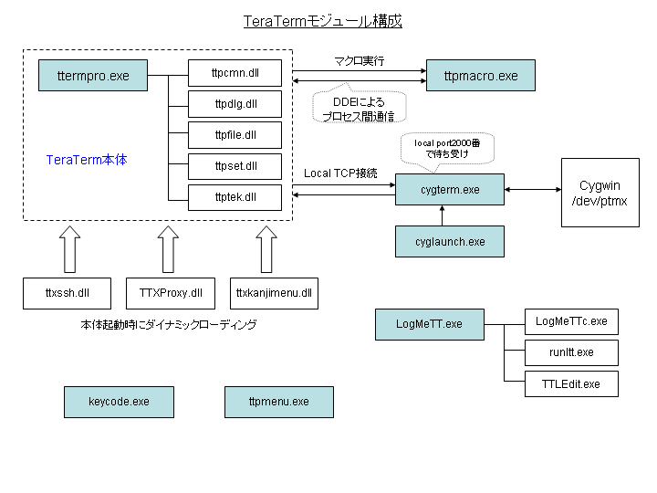

TeraTermソースコード解説
はじめに
本文書では、TeraTermのソースコードについて解説をします。解説対象とするソースコードはバージョン"4.58"（2008年2月現在）のものをベースとしています。
必要スキル
TeraTermのパッケージに含まれるほとんどのプログラムは、C言語で記述されています。一部のコードはC++言語で、MFC(Microsoft Foundation Class)が利用されています。Windows特有の処理を行うために、Win32 APIが多用されているため、APIの知識が必要となってきます。
ソースコードをビルドするためには、Microsoft Visual Studio 2005 Standard Edition以上が必要です。Express EditionではMFCが利用できないため、ビルドができません。また、C++BuilderやTurbo C++ Explorer、gccなどのコンパイラにおいても、ビルドすることはできません。
Windowsプログラミングに関する情報の源は、Microsoftが提供する「MSDNライブラリ」にあります。開発を行う際は、MSDNライブラリを頻繁に参照することになります。
ただし、CygTermのみはCygwinのgccでコンパイルをします。ゆえに、CygTermはgccの機能を使った実装になっています。言語はC++です。
TeraTermのメインエンジンはC++で実装されていますが、C言語的なコーディングがなされているため、TeraTermのソースコードを読み解くには、C言語に関する基礎知識があれば問題ないと言えます。ただし、Microsoft Visual C++(VC++)はANSI C準拠(C89)とはいえ、C99には未対応であるために、本来のC99相当の機能が独自に拡張されている部分もあります。そうした独自拡張された関数には、頭文字にアンダースコア(_)が付いているために、区別が付けやすくなっています（たとえば、_snprintf()など）。
モジュール構成
TeraTermパッケージに含まれる実行モジュール（.exeと.dll）の関連図を以下に示します。実行ファイルの拡張子は".exe"になっており、必要に応じてDLLが動的リンクされます。いずれも32ビットプログラム(x86)であるために、x86-64やIA-64といった64ビット環境ではそのまま動作するかどうかは評価されていません。

通常、ユーザがデスクトップやスタートメニューからアプリケーションを起動するときに、呼び出される実行ファイルは"ttermpro.exe"になります。
古いバージョンのWindowsとの互換性維持